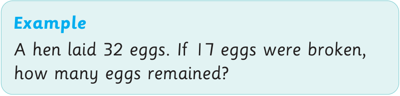

Word problems on subtraction
Word problems on subtraction reflect daily life activities. They are arithmetic puzzles given by one or more sentences.

Example
A hen laid 32 eggs. If 17 eggs were broken, how many eggs remained?
Word problems on subtraction reflect daily life activities. They are arithmetic puzzles given by one or more sentences.

A hen laid 32 eggs. If 17 eggs were broken, how many eggs remained?